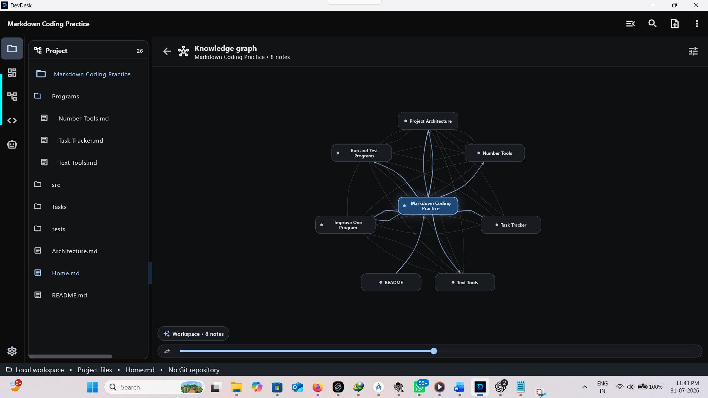
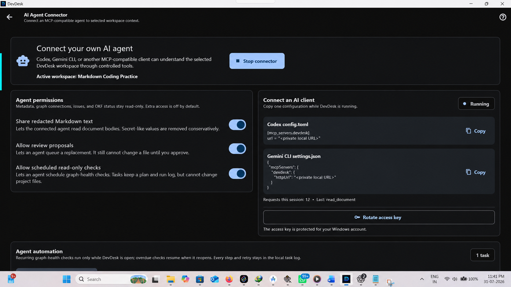
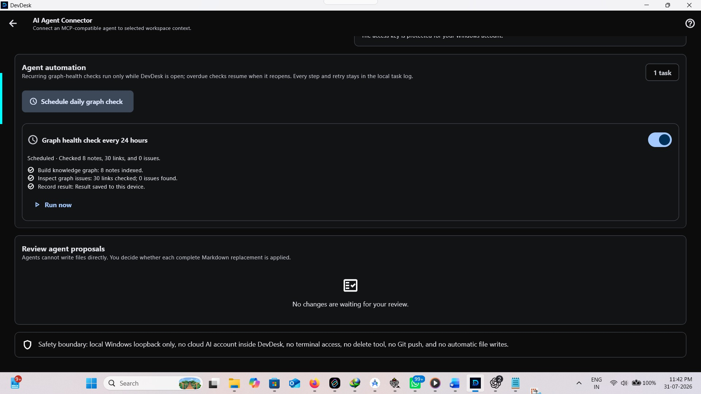
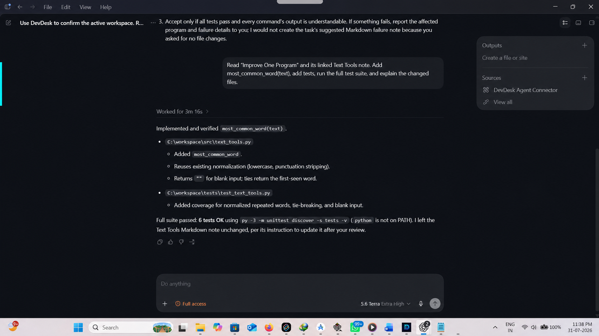

Android
Need access? Contact the developer to join.
Use DevDesk for everyday plans or a real software project without moving your content into a DevDesk cloud. Android access is currently limited to closed testing. The Windows version is available on Microsoft Store. macOS and iOS remain clearly marked upcoming until signed public releases actually exist.

Download a small, local-first workspace with linked Markdown, a tested Python task, and clear instructions for Codex and Gemini CLI. It is designed to show the full workflow in about ten minutes.
project.devdesk and inspect a real knowledge graph.No access key, AI account, or cloud copy of your project is included in the download.
Extract the ZIP and open project.devdesk in DevDesk.
Start the local connector and copy the Codex or Gemini CLI configuration.
Read the plan, run tests, then review a Markdown proposal before applying it.
config.toml.devdesk entry into your mcpServers settings./mcp to confirm it is connected.These are the exact stages a first-time demo user can follow after downloading the workspace.



Tasks, notes, goals, meetings, and decisions shown your way.
Copy or clone the folder, open project.devdesk, and continue.
Use relationships, API testing, OpenAPI, JSON, Diff, and scoped Git only when useful.
Use only the developer's Google Play closed-test page or the official Microsoft Store listing. Avoid modified third-party packages.
Export a DevDesk backup and independently protect external project folders. Protected secrets are not part of supported portable backups.
Read the installation manual or open the public support tracker without posting sensitive data.